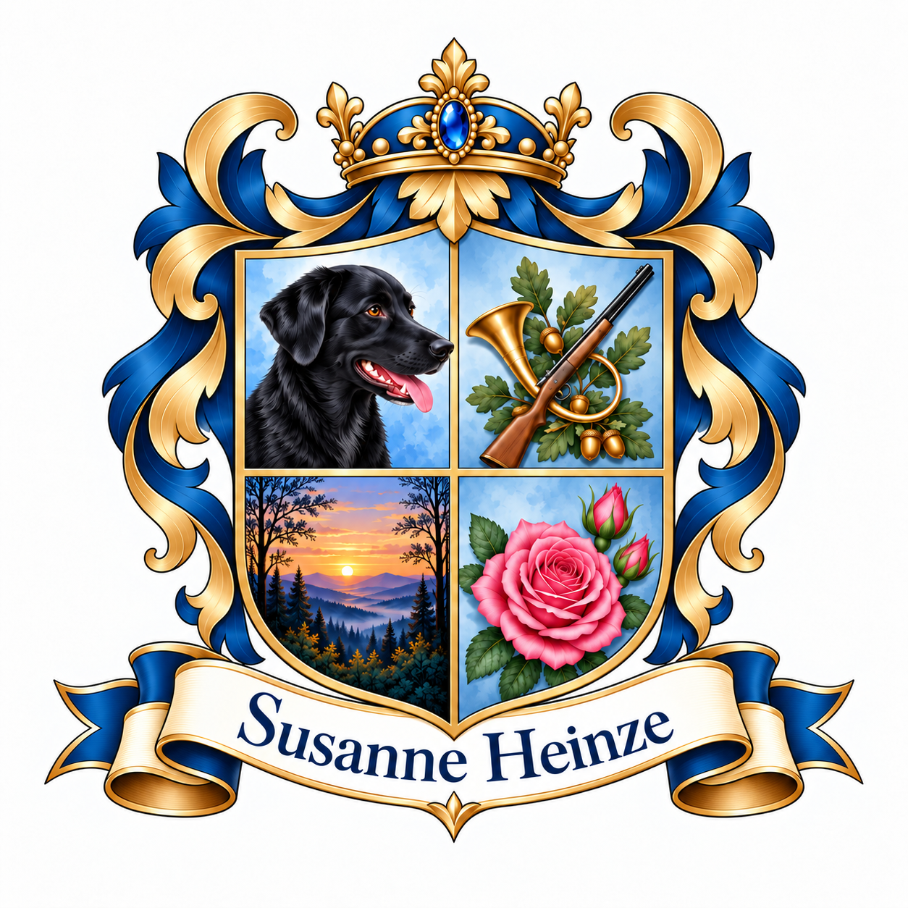
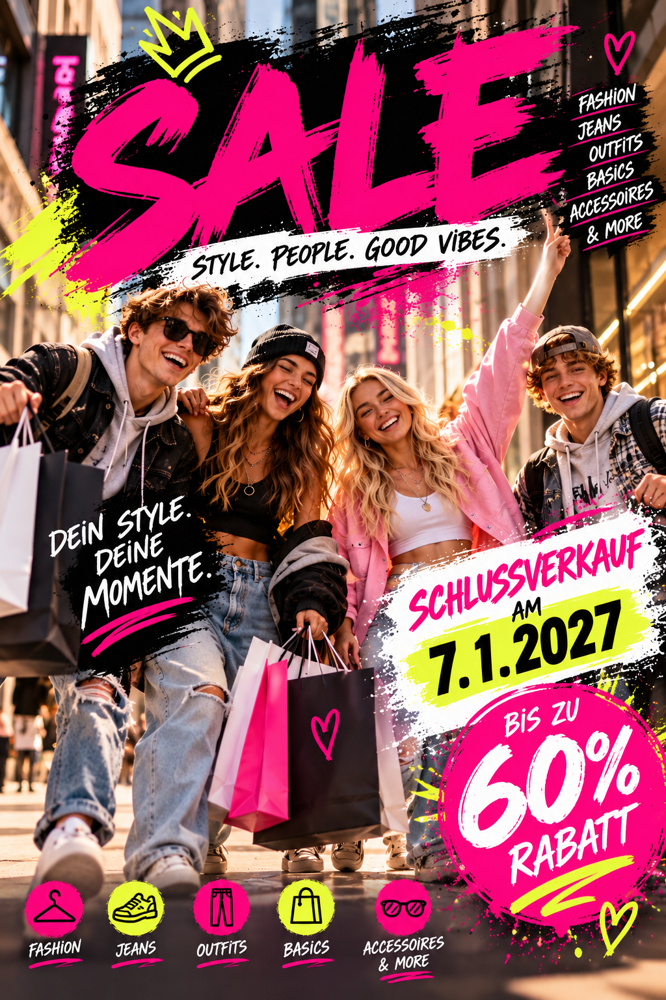
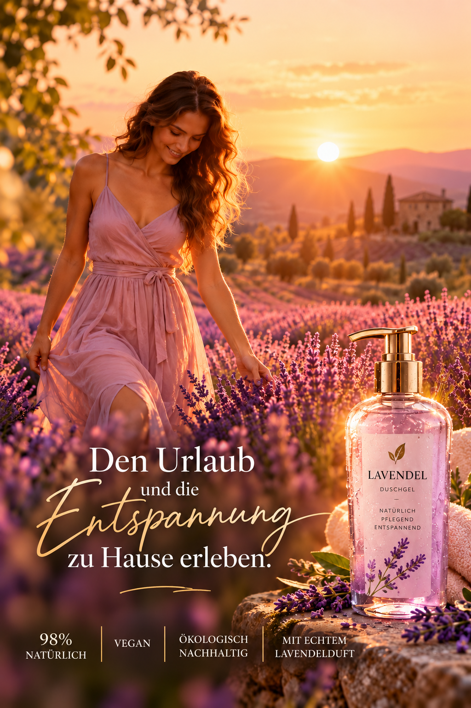

Bildgestaltung & Bildbearbeitung
Unterschiedliche visuelle Stilrichtungen, Bildideen und Bearbeitungen – von experimentellen Motiven bis zu realistischen Bildanpassungen und gezielten Veränderungen bestehender Aufnahmen.

Hier zeige ich ausgewählte praktische Arbeiten aus Bildgestaltung, Video, Werbung und Web. Für mich steht dabei im Mittelpunkt, neue Werkzeuge auszuprobieren, Gestaltungsideen umzusetzen und aus jeder Anwendung weiterzulernen.
Unterschiedliche visuelle Stilrichtungen, Bildideen und Bearbeitungen – von experimentellen Motiven bis zu realistischen Bildanpassungen und gezielten Veränderungen bestehender Aufnahmen.
Konzeption und Gestaltung von Webseiten mit Unterstützung künstlicher Intelligenz. Diese persönliche Homepage ist selbst ein Anwendungsbeispiel – von Struktur und Text bis zur technischen Umsetzung.
KI-unterstützt und KI-generiert erstellte Videoarbeiten.
Überleben im Jahr 2034
KI-generiertes Video
Entwicklung und Erprobung visueller Markenideen mit Unterstützung künstlicher Intelligenz – von der Konzeption individueller Logos und Wappen bis zur Ausarbeitung einer stimmigen visuellen Identität.

Visuelle Kampagnenideen und Werbemotive für unterschiedliche Zielgruppen und Produkte.

Schlussverkauf – Fashion-Sale

Lavendel – Produktwerbung